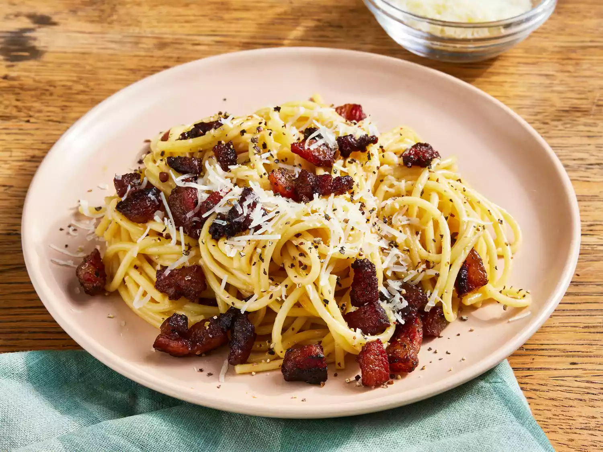

Carbonara is made with guanciale (cured pork), eggs, Pecorino Romano cheese, spaghetti pasta, and lots of black pepper. Italians don't add extra ingredients like cream, milk, garlic, or onions. Try this recipe if you want to make an authentic, creamy carbonara that comes straight from Italy, where I live. Buon appetito!
Ingredients
- 2 teaspoons olive oil
- 1 pound guanciale, diced
- 1 package spaghetti
- 3 large eggs
- 10 tablespoons grated pecorino Romano cheese
- salt and freshly ground black pepper
Steps
- Heat olive oil in large skillet over medium heat; add guanciale. Cook 5 to 10 minutes. Remove from heat and drain on paper towels.
- Cook spaghetti in salted boiling water, stirr occasionally until tender.
- Whisk eggs, 1/2 of the Pecorino, and some black pepper in a bowl until smooth and creamy.
- Pour egg mixture over pasta, stirring quickly, until creamy. Add pasta water if necessary. Stir in guanciale
- Plate and top with remaining Pecorino and black pepper.
Some of our other recipes